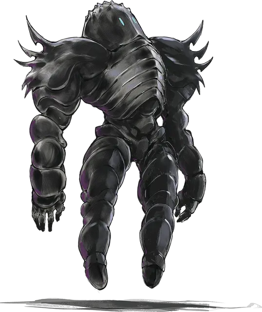

Зодар
Zodar
Средняя Аберрация, обычно нейтральная

Класс Доспеха 20 (природный доспех)
Хиты 200 (16к8 + 128)
Скорость 30 футов, летая 30 футов (парит)
| мод | спас | ||
|---|---|---|---|
| СИЛ | 30 | +10 | +10 |
| ЛОВ | 10 | +0 | +0 |
| ТЕЛ | 26 | +8 | +13 |
| мод | спас | ||
|---|---|---|---|
| ИНТ | 12 | +1 | +6 |
| МДР | 15 | +2 | +7 |
| ХАР | 18 | +4 | +9 |
Иммунитет к урону кислота, огонь, яд
Иммунитет к состояниям глухота, испуг, истощение, окаменение, ослепление, отравление, очарование
Чувства слепое зрение 120 футов (слеп за его пределами), пассивное Восприятие 12
Опасность 16 (15000 опыта)
Бонус мастерства +5
Особенности
Бесплотный голос. Три раз за свою жизнь зодар может создать в окружающем пространстве сообщение из двадцати пяти слов. Он говорит только тогда, когда хочет сказать что-то действительно важное. Это сообщение может понять любое существо с показателем Интеллекта 2 и выше.
Легендарное сопротивление (3/день). Если зодар проваливает спасбросок, он может вместо этого сделать спасбросок успешным.
Запрет переноса. Зодар не может быть телепортирован или отправлен на любой другой план существования против своей воли.
Необычная природа. Зодар не нуждается в воздухе, еде, питье и сне.
Действия
Мультиатака. Зодар совершает две атаки Сокрушающим кулаком. Зодар может использовать Принудительную телепортацию до или после этих атак.
Сокрушающий кулак. . Рукопашная атака оружием: +15 к попаданию, досягаемость 5 фт., одна цель. Попадание: 21 (2к10 + 10) урона силовым полем.
Принудительная телепортация. Зодар магическим образом искривляет пространство вокруг одного существа, которое он может видеть в пределах 60 футов. Цель должна совершить спасбросок Телосложения Сл 21. При провале, цель получает 22 (4к10) урона силовым полем, и зодар телепортирует её вместе со всем снаряжением, которое цель несёт или носит, в свободное пространство на расстояние до 60 футов, которое зодар может видеть. Это пространство должно вмещать цель. При успехе, цель получает половину этого урона и не телепортируется.
Исполнение желаний. Базовой характеристикой зодара является Харизма (Сл спасброска от заклинаний 17). Он может наложить заклинание исполнение желаний [wish], не нуждаясь ни в каких компонентах. После наложения этого заклинания, зодар обращается в пыль и уничтожается.
Описание
Зодар — это двуногая сущность, тело которой заключено в обсидиановый экзоскелет. У него отсутствуют черты лица, кроме двух узких вертикальных щелей, напоминающих глаза, а его лицо не выражает ни боли, ни эмоций. Под бронированной оболочкой тело зодара состоит из плотно переплетенных мышечных волокон, которые делают его невероятно сильным и тяжёлым. Зодар весит 1500 фунтов.
Никто не знает, сколько их и откуда они взялись. Самая популярная гипотеза гласит, что они — творения какого-то давно забытого бога. Зодары взаимодействуют с другими разумными существами способом, выходящим за рамки простого безразличия. Они просто парят в тишине. Когда зодар наконец совершает какое-то значительное действие, причины этого действия не всегда понятны.
Одним из объяснений такого поведения является то, что у каждого зодара есть определенная миссия и он неустанно стремится к ней. Он странно реагирует на ситуации, не связанные с ней, потому что не знает, что делать в таком случае. Другая теория гласит, что все зодары действуют согласованно для достижения какой-то главной цели. Третья, менее зловещая теория, заключается в том, что зодары потеряли свое предназначение, когда исчез их создатель. И теперь они пытаются найти для себя новую роль.
Зодар может вызвать бесплотный голос в окружающем пространстве три раза за свою жизнь. Когда он почувствует необходимость в словах, то будет подбирать их с умом. Он также может деформировать ткань мультивселенной, чтобы наложить заклинание исполнение желаний [wish] в качестве своей последней воли. После наложения заклинания он уничтожается.